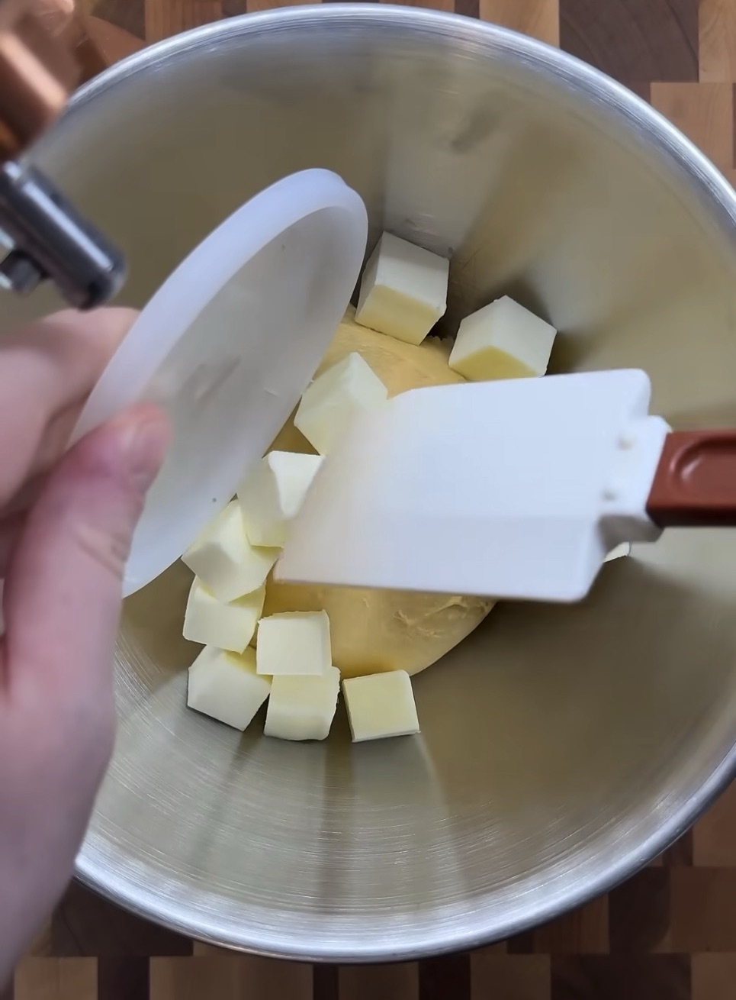
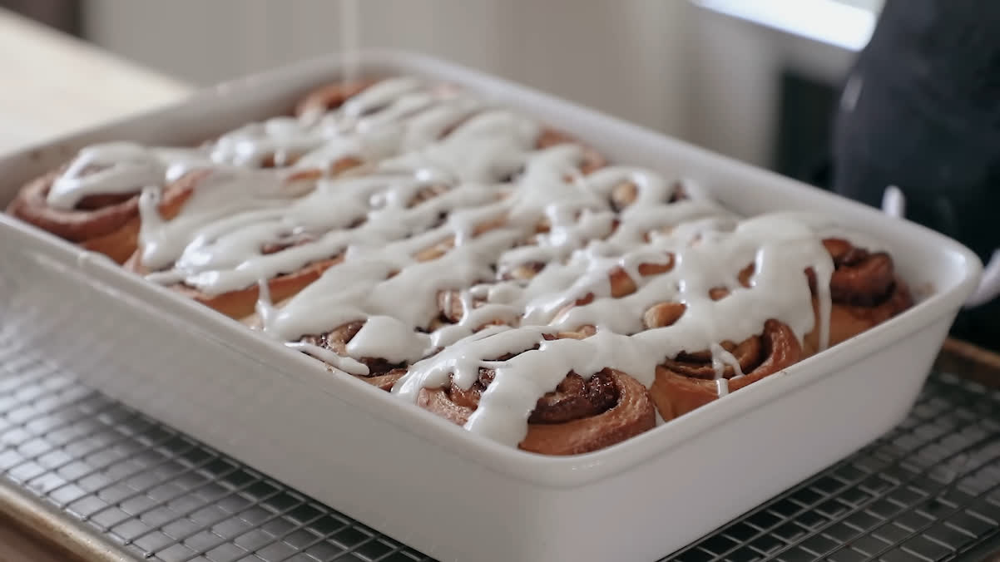

В сотейник добавьте все ингредиенты для tangzhong. На среднем огне тщательно помешивайте венчиком до тех пор, пока масса не станет похожа на густую пасту. Дайте остыть.
В миске стационарного миксера смешайте остывший tangzhong и все ингредиенты для теста, кроме сливочного масла. Перемешивайте на низкой скорости до объединения.
Увеличьте скорость до средней и замешивайте тесто, пока не появится средняя степень развития клейковины (примерно 6 минут).
Добавьте замороженные кусочки сливочного масла. Мешайте 1 минуту, пока масло немного не раскрошится, но останется в крупных кусках.

Накройте тесто и поставьте в холодильник на ночь.
На следующий день достаньте тесто из холодильника, раскатайте его в прямоугольник и сложите в три слоя. Поверните тесто на 90 градусов и повторите. Оберните плёнкой и отправьте в холодильник на 1 час.
Раскатайте тесто в прямоугольник размером 30х40 см.
Смешайте все ингредиенты для начинки до однородной массы. Равномерно распределите её по тесту.
Сверните тесто в рулет вдоль длинной стороны. Нарежьте зубчатым ножом на 12 одинаковых частей. Выложите рулеты в форму для выпечки, смазанную маслом.
Накройте рулеты плёнкой и оставьте при комнатной температуре на 45–90 минут, пока они не увеличатся в объёме.
Разогрейте духовку до 180°C.
Выпекайте рулеты 30–35 минут, пока они не станут светло-золотистыми сверху.
Для глазури взбейте сливочный сыр, затем смешайте с сахарной пудрой до получения однородной массы. Вмешайте молоко до получения однородной, но не слишком жидкой массы, затем добавьте ванилин и взбейте все вместе.
Для хранения дайте булочкам без глазури остыть при комнатной температуре накрыв обычным, либо бумажным полотенцем. После этого создайте для них герметичную среду, например, используя пищевую пленку и поставьте в холодильник. Глазурь также поставьте в холодильник в герметичном контейнере.
Перед подачей разогрейте булочку в духовке прикрыв фольгой в течение 3-5 минут при 150–180°C, либо в микроволновке на 15-45 секунд
Полейте глазурью и подавайте к столу.
